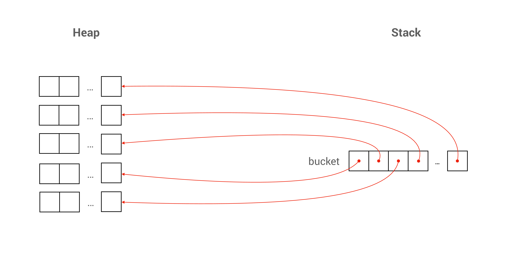

Unit 19: Multi-Dimensional Arrays
Learning Objectives
After completing this unit, students should:
- be comfortable reading and writing code that involves multi-dimensional arrays
- be able to declare and allocate multi-dimensional arrays on the stack and the heap
- be able to decide when to use a fixed-size multi-dimensional array, a dynamically-sized multi-dimensional array, or a mixture of the two
- understand how we can pass a multi-dimensional array into a function
- understand the differences in C syntax, between an array of pointers and a pointer to an array.
- be able to declare and allocate jagged arrays
Preliminary: Pointer to a Fixed-Size Array
Consider the following code:
1 2 3 | |
We know that, due to array decay, ptr will be pointing to the first element of the array.
C allows us to have a pointer that points to an array. Note: Not just an element, but the whole array. We can do so with
1 2 3 | |
The declaration long (*ptr)[20] denotes that ptr is a pointer to an array of 20 long elements. We can decipher this syntax as follows: (*ptr) is an array of 20 long values. * is the deference operator to an address, so ptr must then be a memory address of an array of 20 long values.
C is very particular about the type of pointer that points to an array -- the size of the array matters. If we write
1 2 3 | |
We will get a compilation warning about incompatible pointer types on the line ptr = &a, since a is an array of 20 long values, and ptr is a pointer to an array of 10 long values.
Note that the parenthesis around the (*ptr) is important. If we write:
1 | |
or
1 | |
Then, we are declaring an array of 10 pointers to long, which is different from a pointer to an array of 10 long values.
Fixed-size 2D Array
At the beginning of Unit 14, we say that an array can hold one or more values of some type \(T\). \(T\) can be any type, including an array. So, we can have an array where each element is another array.
For instance,
1 | |
Here, we have an array of 10 elements, and each element is an array of 20 long values.
When we access the elements in the array, we can use the notation matrix[i][j]. This notation is actually a simpler form of (matrix[i])[j] -- matrix[i] refers the i+1-th element in matrix, which is an array of 20 elements. So (matrix[i])[j] accesses the j+1-th element in this array of 20 elements.
Such an array is called a two-dimensional array, or 2D array. We can have a 3D array, 4D array, and so on.
We have seen three types of arrays. On the stack, we have fixed-length arrays and variable-length arrays. On the heap, we have dynamically allocated arrays. A 2D array can mix different types of arrays. Since we ban the use of variable length arrays, we will focus on fixed-length arrays and dynamically allocated arrays only.
The example matrix above is a fixed-length 2D array. In the memory, a continuous space to store 200 long values is allocated. We can visualize this as having 10 rows of long array, each array contains 20 columns of long values.
Since matrix[i] is an array in the example above, matrix[i] decays to &matrix[i][0], the address of the first element in matrix[i]. After decay, matrix[i] can be treated as having the type long *.
Further, since matrix[i] is a 1D array, we can pass matrix[i], which is one of the rows in matrix, just like a normal 1D array:
1 2 | |
We can then invoke the function bar like:
1 | |
Things get a bit tricky when we want to pass a 2D array into a function. By array decay, when we use the array name matrix, it is equivalent to &matrix[0], which is the address of the first element in matrix, which is the memory address of an array of 20 long elements.
To pass a 2D array into a function, say foo, we can write
1 2 3 | |
Here, we cannot omit the number 20 since it is part of the type information.
With the declaration above, we can then call the function foo and pass in the 2D array as such:
1 | |
Same Address; Different Meaning
Since an array in C consists only of a contiguous region of memory that stores the elements of the array, the address of an array is the same as the address of the first element of the array. The following five statements would print out exactly the same values.
1 2 3 4 5 | |
A Fixed-Size Array of Dynamically Allocated Array
Suppose that we know only one of the dimensions of the array in advance, but not the other dimension. We can allocate a fixed-length array for the known dimension, and allocate the other dimension dynamically using calloc. We can declare an array like this:
| Allocating a 2D Array, Non-Contiguous Memory (Without Proper Failure Handling) | |
|---|---|
1 2 3 4 5 | |

Just like a dynamically allocated 1D array, we need to free the allocated memory after we are done.
If we allocate non-contiguous regions of memory for our 2D array (with multiple calloc calls), then we need to deallocate it with multiple free calls.
1 2 3 | |
An alternative is to allocate a single contiguous region of memory with a single calloc call, and then point the pointers in our array in the right memory location.
| Allocating a 2D Array, Contiguous Memory (Without Proper Failure Handling) | |
|---|---|
1 2 3 4 5 6 | |
For contiguous memory allocation, there is only one calloc call. So we only need to:
1 | |
Here, bucket is a 1D array of 10 pointers to double. So, we can easily pass bucket to a function just like any other 1D array:
void baz(size_t num_of_rows, size_t num_of_cols, double **bucket)void baz(size_t num_of_rows, size_t num_of_cols, double *bucket[])
Accessing individual elements in such type of array is no different from accessing a fixed-length 2D array: we use bucket[i][j]. Just like a 1D array, bucket[i][j] is synonym with *(bucket[i] + j), which is synonym with *(*(bucket + i) + j).
Dealing with Allocation Failures
Just like a dynamically allocated 1D array, we need to deal with the possibility that memory allocation can fail. To do this, we need to check if each calloc is successful or not. In case one of the memory allocations fails, then we would have a partially allocated 2D array. We will need to deallocate all those partially allocated memory with free.
| Allocating a 2D Array, Non-Contiguous Memory (With Proper Failure Handling) | |
|---|---|
1 2 3 4 5 6 7 8 9 10 11 12 | |
If we allocate a single contiguous region of memory with a single calloc call, then the code is simpler:
| Allocating a 2D Array, Contiguous Memory (With Proper Failure Handling) | |
|---|---|
1 2 3 4 5 6 7 8 9 10 | |
Dynamically Size 2D Array
Suppose that we do not know both dimensions in advance, then we can allocate both dimensions of the array dynamically on the heap.
1 2 3 4 5 6 7 8 9 10 11 12 13 14 15 16 17 18 19 | |
Passing such an array into a function is no different from a 2D array where only one dimension is dynamically allocated above.
Remember to free the allocated memory for both dimensions after we are done or if one of the rows encounters an error.
1 2 3 4 | |
Note that during the deallocation of memory, we need to do it in the reverse order of memory allocation. If we call free(canvas) first, we are no longer guaranteed to be able to access canvas[i] with the correct pointers inside, so calling free(canvas[i]) after free(canvas) might lead to an error.
Just like before, there is an alternative where we can also allocate a single contiguous region of memory with a single calloc call, and then point the pointers in our array in the right memory location.
1 2 3 4 5 6 7 8 9 10 11 12 13 14 15 16 17 18 | |
If we allocate a single contiguous region of memory for canvas, then we only need to free(canvas[0]) and free(canvas) once we are done.
Jagged Array
One advantage of using a dynamically allocated array is that it allows a jagged 2D array, where each row has a different size. The example below allocate memory for a 2D array that is shaped like a half-square: the first row has one element, the second row has two elements, the third row has three, and so on.
1 2 3 4 | |
Initializing a Multidimensional Array
Just like a 1D-array, we can initialize a multi-dimensional array with initializers during declaration:
1 2 3 4 5 | |
Note that we use nested { and } here. There are other variations to the syntax above, which you may read up on your own if you are interested as we do not need to write complex initializers for multi-dimensional arrays that often.